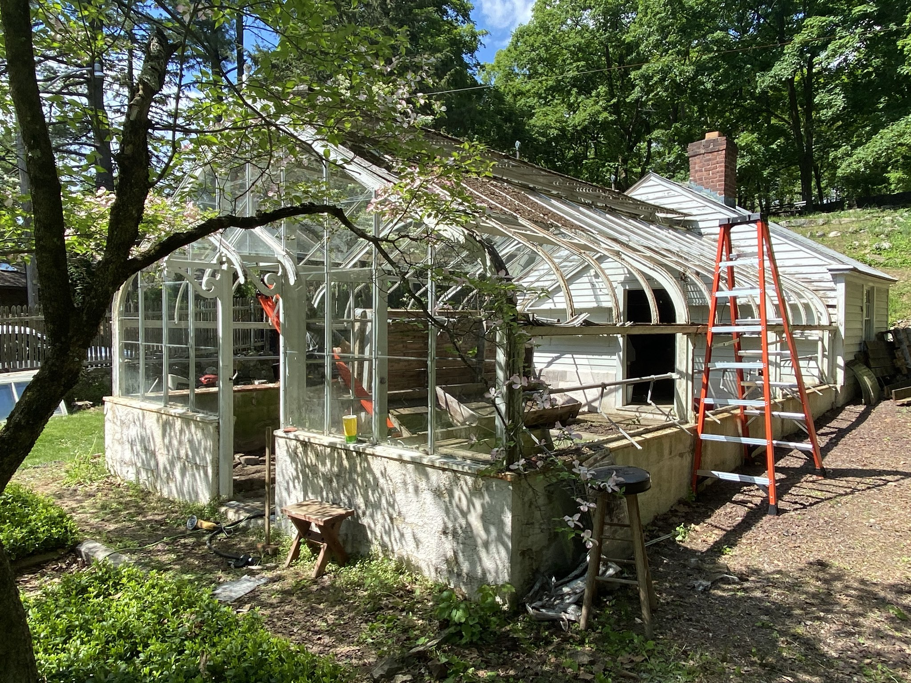

Price includes poured concrete footing with solid concrete block layered base and 6 to 7 course of brick and flagsone interior with pea gravel border. Structure custom milled from Weatherguard GC timber and Accoya LEED certified lumber. 4 roof windows with Bayless Auto openers, one manual opening window on each gabel end. Optional cold boxes(small compartments on either side of porch). 3/16th tempered glass, sealed, two coats of Behr Exterior paint. Solid red oak hand lathed finnials and shelving included. Color choices made upon deposit. Custom milled Mahogany crested ridge, guttering, cold frames, shade clothes and misting are available as optional upgrades.
The Butterfly
Price includes poured concrete footing with solid concrete block layered base and 6 to 7 course of brick and flagsone interior with pea gravel border. Structure custom milled from Weatherguard GC timber and Accoya LEED certified lumber. 4 roof windows with Bayless Auto openers, one manual opening window on each gabel end. Optional cold boxes(small compartments on either side of porch). 3/16th tempered glass, sealed, two coats of Behr Exterior paint. Solid red oak hand lathed finnials and shelving included. Color choices made upon deposit. Custom milled Mahogany crested ridge, guttering, cold frames, shade clothes and misting are available as optional upgrades.
The Cocoon
Price includes poured concrete footing with solid concrete block layered base and 6 to 7 course of brick and flagsone interior with pea gravel border. Structure custom milled from Weatherguard GC timber and Accoya LEED certified lumber. 4 roof windows with Bayless Auto openers, one manual opening window on each gabel end. Optional cold boxes(small compartments on either side of porch). 3/16th tempered glass, sealed, two coats of Behr Exterior paint. Solid red oak hand lathed finnials and shelving included. Color choices made upon deposit. Custom milled Mahogany crested ridge, guttering, cold frames, shade clothes and misting are available as optional upgrades.frames, shade clothes and misting are available as optional upgrades.

Restored Greenhouses
A love for these classic structures built from mid 1800’s to mid 1900’s. We offer restoration and additionally acquire these garden treasures to be raised in new gardens.